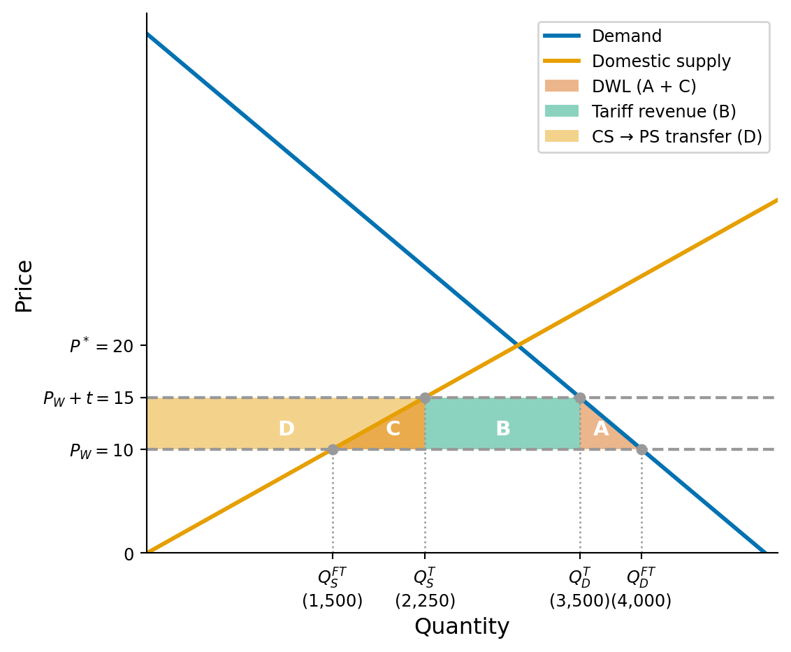

Problem Set 2: Solutions
Econ 502: Advanced Microeconomics
Problem 1: Automation and Labor Demand
Part (a): Elasticity of substitution
The production function \[Q = [0.6R^{0.5} + 0.4L^{0.5}]^2\] is a CES function with parameter \(\rho = 0.5\) (since the outer exponent is \(1/\rho = 2\)). The elasticity of substitution is:
\[\sigma = \frac{1}{1 - \rho} = \frac{1}{1 - 0.5} = 2\]
Since \(\sigma = 2 > 1\), robots and workers are good substitutes: more substitutable than Cobb-Douglas (\(\sigma = 1\)). The firm can replace workers with robots relatively easily when the price of robots falls. A 1% decrease in the relative price of robots leads to a 2% increase in the robot-to-worker ratio. For more details on CES functions, see handout here.
Part (b): Cost-minimizing input mix for \(Q = 1000\)
The cost-minimizing condition requires \(MRTS = r/w\). Computing the marginal products:
\[MP_R = 2[0.6R^{0.5} + 0.4L^{0.5}] \cdot 0.3 R^{-0.5}, \qquad MP_L = 2[0.6R^{0.5} + 0.4L^{0.5}] \cdot 0.2 L^{-0.5}\]
Taking the ratio:
\[MRTS = \frac{MP_R}{MP_L} = \frac{0.3}{0.2} \cdot \frac{L^{0.5}}{R^{0.5}} = 1.5\left(\frac{L}{R}\right)^{0.5}\]
Setting \(MRTS = r/w\) and solving for the input ratio:
\[1.5\left(\frac{L}{R}\right)^{0.5} = \frac{r}{w} \quad \Longrightarrow \quad \frac{R}{L} = \left(\frac{1.5w}{r}\right)^2\]
With \(r = 20\) and \(w = 25\):
\[\frac{R}{L} = \left(\frac{1.5 \times 25}{20}\right)^2 = (1.875)^2 \approx 3.52\]
So \(R \approx 3.52L\). Substituting into the production function with \(Q = 1000\):
\[\sqrt{1000} = 0.6\sqrt{3.52}\,L^{0.5} + 0.4\,L^{0.5} = L^{0.5}(0.6 \times 1.876 + 0.4) = 1.526\,L^{0.5}\]
\[L^{0.5} = \frac{31.62}{1.526} = 20.72 \quad \Longrightarrow \quad L \approx 429\]
\[R \approx 3.52 \times 429 \approx 1{,}510\]
Total cost: \(C = 20(1{,}510) + 25(429) = 30{,}200 + 10{,}725 = \$40{,}925\).
\[\boxed{R \approx 1{,}510, \quad L \approx 429, \quad C \approx \$40{,}925}\]
Part (c): Robot rental rate falls to \(r = 10\)
With the new prices:
\[\frac{R}{L} = \left(\frac{1.5 \times 25}{10}\right)^2 = (3.75)^2 = 14.06\]
So \(R \approx 14.06L\). Substituting into the production constraint:
\[\sqrt{1000} = L^{0.5}(0.6 \times 3.75 + 0.4) = 2.65\,L^{0.5}\]
\[L^{0.5} = 11.93 \quad \Longrightarrow \quad L \approx 142\]
\[R \approx 14.06 \times 142 \approx 1{,}997\]
Percentage change in robot-to-worker ratio: The ratio goes from 3.52 to 14.06, an increase of \(\frac{14.06 - 3.52}{3.52} \times 100 \approx 300\%\). The robot-to-worker ratio quadruples. This is because when \(r\) halves, the relative price \(w/r\) doubles, and with \(\sigma = 2\) the input ratio responds by a factor of \(2^2 = 4\).
New cost of production: \(C = 10(1{,}997) + 25(142) = 19{,}970 + 3{,}550 = \$23{,}520\). The cost of producing 1000 units falls by about 42% due to the cheaper robots.
\[\boxed{R \approx 1{,}997, \quad L \approx 142, \quad C \approx \$23{,}520}\]
Part (d): Robot tax and job savings
A robot tax raising \(r\) back to 20 would restore the input mix from part (b). Since the firm would use 429 workers instead of 142, the tax would save approximately \(287\) worker-hours per 1,000 units of output.
The trade-off: The cost of producing 1000 units would rise by about 42% from $23,520 back to $40,925, which may lead to higher prices for consumers and lower profits for the firm. The tax protects jobs but at the cost of efficiency and potentially higher prices. The firm may also have less incentive to invest in automation in the future, which could slow technological progress. But do we want to live in a society where people don’t have jobs? Maybe if everyone owned robots, we wouldn’t have to worry about unemployment. There is also a possibility that new jobs could be created to replace the ones lost to automation.
Problem 2: Profit Maximization and Taxation
A competitive firm maximizes profit \(\pi = P \cdot q - C(q)\), yielding the first-order condition \(P = MC(q)\).
Lump-sum tax on profits. With a lump-sum tax \(T\), profit becomes: \[\pi = Pq - C(q) - T\] The FOC is still \(P = MC(q)\) since \(T\) does not depend on the level of output \(Q\). The profit-maximizing quantity is unchanged as the firm can’t change it’s tax burden by adjusting output. The lump-sum tax reduces profits but does not distort production decisions.
Proportional tax on profits. With tax rate \(t\), after-tax profit is: \[\pi = (1-t)[Pq - C(q)]\] The FOC now is \((1-t)[P - MC(q)] = 0\), which implies \(P = MC(q)\), the same condition as before. Once again, the profit-maximizing quantity is unchanged.
Output tax. With a per-unit tax \(\tau\), profit becomes: \[\pi = Pq - C(q) - \tau q = (P - \tau)q - C(q)\] The FOC is \(P - \tau = MC(q)\), so the firm produces where marginal cost equals the net price \(P - \tau\). Since \(MC\) is increasing, the profit-maximizing quantity decreases. The per-unit tax is equivalent to a reduction in the output price: it shifts the effective price down and reduces output.
Intuition for why there is distortion with an output tax but not with a proportional tax: The output tax makes each unit of output less profitable, so the firm produces less. With a proportional tax, the firm still wants to produce the quantity that maximizes pre-tax profits, since a higher pre-tax profit means a higher after-tax profit even after paying the percentage to the government.
Tax on labor input. If the firm uses labor \(L\) at wage \(w\) and the government imposes a tax \(t_L\) per unit of labor, the effective wage rises to \(w + t_L\). This increases the cost function \(C(q)\), which shifts \(MC(q)\) upward. Since the firm produces where \(P = MC(q)\), a higher \(MC\) curve means a lower profit-maximizing quantity. Output decreases. The firm also substitutes away from labor toward other inputs.
Problem 3: Trade Policy and the Portable Radio Market
Part (a): Domestic equilibrium
Setting domestic demand equal to domestic supply:
\[D(P) = S(P) \quad \Longrightarrow \quad 5{,}000 - 100P = 150P \quad \Longrightarrow \quad 250P = 5{,}000\]
\[\boxed{P^* = \$20, \qquad Q^* = 3{,}000 \text{ radios}}\]
Part (b): Free trade at world price \(P_W = \$10\)
At \(P = 10\):
- Domestic demand: \(Q_D = 5{,}000 - 100(10) = 4{,}000\)
- Domestic supply: \(Q_S = 150(10) = 1{,}500\)
\[\boxed{\text{Imports} = Q_D - Q_S = 4{,}000 - 1{,}500 = 2{,}500 \text{ radios}}\]
The price falls from $20 to $10, domestic consumption rises, domestic production falls, and the gap is filled by imports.
Part (c): $5 tariff
With the tariff, the domestic price rises to \(P = 10 + 5 = \$15\):
- Domestic demand: \(Q_D = 5{,}000 - 100(15) = 3{,}500\)
- Domestic supply: \(Q_S = 150(15) = 2{,}250\)
- Imports: \(3{,}500 - 2{,}250 = 1{,}250\)
Tariff revenue:
\[R = \$5 \times 1{,}250 = \$6{,}250 \]
Change in consumer surplus (A+B+C+D):
\[\Delta CS = -\frac{1}{2}(Q_D^{FT} + Q_D^{T})(P^{T} - P^{FT}) = -\frac{1}{2}(4{,}000 + 3{,}500)(5) = -\$18{,}750 \]
Consumer surplus transferred to domestic producers (D):
\[\Delta PS = \frac{1}{2}(Q_S^{FT} + Q_S^{T})(P^{T} - P^{FT}) = \frac{1}{2}(1{,}500 + 2{,}250)(5) = \$9{,}375 \]
Deadweight loss (A+C):
\[DWL = |\Delta CS| - \Delta PS - R = 18{,}750 - 9{,}375 - 6{,}250 = \$3{,}125 \] This DWL consists of two triangles:
- Production inefficiency (C): \(\frac{1}{2}(5)(2{,}250 - 1{,}500) = 1{,}875\) (resources wasted producing domestically what could be imported more cheaply)
- Consumption loss (A): \(\frac{1}{2}(5)(4{,}000 - 3{,}500) = 1{,}250\) (lost surplus from consumers priced out of the market)
Part (d): Voluntary Export Restraint (VER)
With the VER limiting imports to 1,250, the domestic price must adjust so that \(Q_D - Q_S = 1{,}250\):
\[5{,}000 - 100P - 150P = 1{,}250 \quad \Longrightarrow \quad P = \$15\]
The equilibrium price, domestic demand, domestic supply, and import quantity are identical to the tariff case.
Key difference: With a tariff, the government collects $6,250 in tariff revenue. With the VER, there is no tariff: foreign exporters sell at the higher domestic price of $15 instead of the world price of $10, so they capture the $6,250 as quota rents.
From the domestic country’s perspective, the VER is strictly worse than the tariff:
| Tariff | VER | |
|---|---|---|
| CS loss | -18,750 | -18,750 |
| PS gain | +9,375 | +9,375 |
| Gov. revenue | +6,250 | 0 |
| Quota rents to foreigners | 0 | -6,250 |
| Net domestic welfare change | -3,125 | -9,375 |
The VER transfers an additional $6,250 to foreign producers, making the domestic welfare loss three times larger than the tariff.
Problem 4: General Equilibrium Exchange
Part (a): MRS at initial endowment
For \(U = X \cdot Y\) (Cobb-Douglas with equal exponents):
\[MRS = \frac{MU_X}{MU_Y} = \frac{Y}{X}\]
At the initial endowment \((X_A, Y_A) = (70, 30)\) and \((X_B, Y_B) = (30, 70)\):
\[MRS_A = \frac{30}{70} = \frac{3}{7} \approx 0.43, \qquad MRS_B = \frac{70}{30} = \frac{7}{3} \approx 2.33\]
Since \(MRS_A \neq MRS_B\), the initial allocation is not Pareto efficient. There are gains from trade: Ben values X much more highly than Ana does (he is willing to give up 7/3 units of Y for one unit of X, while Ana would only give up 3/7). Ana should trade X to Ben in exchange for Y.
Part (b): Competitive equilibrium at \(P_X/P_Y = 1\)
Let \(P_Y = 1\) (numeraire), so \(P_X = 1\).
Ana’s problem: Budget \(= P_X \cdot 70 + P_Y \cdot 30 = 100\). With \(U = XY\), the demand functions are:
\[X_A = \frac{I_A}{2P_X} = \frac{100}{2} = 50, \qquad Y_A = \frac{I_A}{2P_Y} = \frac{100}{2} = 50\]
Ben’s problem: Budget \(= P_X \cdot 30 + P_Y \cdot 70 = 100\). By the same logic:
\[X_B = \frac{100}{2} = 50, \qquad Y_B = \frac{100}{2} = 50\]
Market clearing: Total demand for \(X\): \(50 + 50 = 100\) = total endowment. ✓
\[\boxed{(X_A, Y_A) = (50, 50), \qquad (X_B, Y_B) = (50, 50)}\]
Ana trades 20 units of X to Ben in exchange for 20 units of Y.
Part (c): Verifying Pareto efficiency
At the equilibrium allocation:
\[MRS_A = \frac{Y_A}{X_A} = \frac{50}{50} = 1, \qquad MRS_B = \frac{Y_B}{X_B} = \frac{50}{50} = 1\]
\[\boxed{MRS_A = MRS_B = 1 = \frac{P_X}{P_Y}}\]
The competitive equilibrium is Pareto efficient: both consumers’ marginal rates of substitution are equal (to each other and to the price ratio), so there is no way to make one person better off without making the other worse off.
Part (d): Contract curve and the First Welfare Theorem
The contract curve is the set of all Pareto efficient allocations, where \(MRS_A = MRS_B\):
\[\frac{Y_A}{X_A} = \frac{Y_B}{X_B} = \frac{100 - Y_A}{100 - X_A}\]
Cross-multiplying: \(Y_A(100 - X_A) = X_A(100 - Y_A)\), which simplifies to:
\[\boxed{Y_A = X_A}\]
The contract curve is the diagonal of the Edgeworth box (equivalently, \(Y_B = X_B\)). Every Pareto efficient allocation gives each person equal amounts of both goods.
The First Welfare Theorem states that every competitive equilibrium allocation is Pareto efficient. We verified this in part (c): the equilibrium allocation \((50, 50)\) for both consumers lies on the contract curve (\(Y_A = X_A = 50\)). The competitive market, guided only by prices, achieves an efficient outcome without any central planner.
Problem 5: Optimal Redistribution with Distortionary Taxation
Part (a): Deriving the optimal tax rate
Substituting the consumption expressions into the welfare function:
\[c_P = y_P + \tau y_R - \frac{1}{2}k\tau^2 y_R, \qquad c_R = (1-\tau)y_R\]
\[W(\tau) = \alpha\left[y_P + \tau y_R - \frac{1}{2}k\tau^2 y_R\right] + (1-\alpha)(1-\tau)y_R\]
Expanding:
\[W(\tau) = \alpha y_P + \alpha\tau y_R - \frac{1}{2}\alpha k\tau^2 y_R + (1-\alpha)y_R - (1-\alpha)\tau y_R\]
Taking the first-order condition:
\[\frac{dW}{d\tau} = \alpha y_R - \alpha k\tau y_R - (1-\alpha)y_R = 0\]
Dividing through by \(y_R\):
\[\alpha - \alpha k\tau - (1 - \alpha) = 0\]
\[2\alpha - 1 = \alpha k\tau\]
\[\boxed{\tau^* = \frac{2\alpha - 1}{\alpha k}}\]
The second-order condition confirms this is a maximum: \(\frac{d^2W}{d\tau^2} = -\alpha k y_R < 0\). Note that \(\tau^* > 0\) requires \(\alpha > 1/2\): positive redistribution is only optimal when society places more weight on the poor than on the rich.
Part (b): Comparative statics
Rewriting \(\tau^*\) in a more convenient form:
\[\tau^* = \frac{2}{k} - \frac{1}{\alpha k}\]
(i) Effect of inequality aversion \(\alpha\):
\[\frac{\partial \tau^*}{\partial \alpha} = \frac{1}{\alpha^2 k} > 0\]
Higher inequality aversion (larger \(\alpha\)) increases the optimal tax rate. Intuition: When society cares more about the well-being of the poor relative to the rich, it is willing to tolerate more deadweight loss in order to transfer additional resources to the poor. A more egalitarian social welfare function justifies a larger tax-and-transfer program.
(ii) Effect of the distortion parameter \(k\):
\[\frac{\partial \tau^*}{\partial k} = -\frac{2\alpha - 1}{\alpha k^2} < 0 \quad \text{(for } \alpha > 1/2\text{)}\]
A higher distortion cost (larger \(k\)) decreases the optimal tax rate. Intuition: When taxation is more distortionary (meaning more revenue is lost to deadweight loss per dollar collected), the government should tax less aggressively. The “leaky bucket” of redistribution becomes leakier: each dollar taken from the rich delivers less than a dollar to the poor, so the marginal cost of redistribution rises and the optimal level falls.